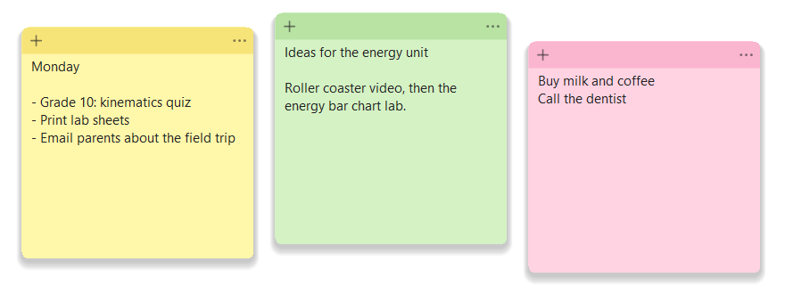

🗒️ Sticky Notes
Sticky notes on your desktop that sync between your computers through Google Drive: write a note at work on the Mac, and it's there when you open the Windows PC at home.
💻 Desktop app
Windows 10 / 11
macOS 11 or later
Syncs with Google Drive for desktop
Free · MIT License
This is a download, not a web page.
Unlike the other tools on this site, Sticky Notes is a program that you download and run on your own computer.
Before downloading, please read the
About and the
License below.
The download buttons unlock once you have scrolled through the license and accepted it.

Notes in three of the six colors. Each note has + for a new note and ⋯ for its color, keep on top and delete.
1About
What it does
- Small colored notes that stay on your desktop. They save as you type.
- The notes sync through your Google Drive folder, so the same notes appear on your Mac and your Windows computer. A change on one shows up on the other as soon as Google Drive has copied it, usually within a minute.
- + makes a new note (also Ctrl+N / ⌘N). ⋯ changes the color, keeps the note on top of other windows, or deletes it.
- Drag the top bar to move a note, and an edge or the bottom-right corner to resize it. Each computer remembers where its notes sit on screen.
- If the same note is edited on both computers before Drive syncs, you get both versions as separate notes, so nothing is lost.
- Deleted notes move to a Trash folder inside the notes folder, so you can get them back.
- Notes are plain text (no bold, pictures or checkboxes), so they look the same on both systems.
Setting it up
- Install Google Drive for desktop on each computer and sign in with the same Google account on both.
- Open Sticky Notes. It finds your Google Drive and keeps the notes in My Drive/StickyNotes. If you have more than one Google account, it asks which one to use: choose the same one on every computer.
- On Windows the app lives in the notification area (the ^ next to the clock); on the Mac it's in the Dock.
Turn on Start with Windows (tray icon menu) or Open at Login (Sticky Notes menu, macOS 13 or later) so your notes are there when the computer starts.
Privacy
Sticky Notes collects no personal data and never connects to the internet.
Each note is a small text file in the folder you choose, normally your Google Drive folder. Google Drive for desktop, not this app,
copies that folder between your computers, under your Google account's terms.
The app also saves its own settings (the notes folder and where each note sits on screen) on your computer.
Installing
- Windows: double-click
StickyNotes.exe. No installation is needed.
The app isn't signed with a paid certificate, so the first time Windows may show “Windows protected your PC”. Click More info, then Run anyway.
- macOS: open
StickyNotes.dmg and drag Sticky Notes into Applications.
The app isn't signed with a paid Apple Developer ID, so the first time macOS may block it. Open System Settings → Privacy & Security and click Open Anyway.
macOS may also ask to let it access files in Google Drive: click Allow.
Disclaimer
This software is free and is provided “as is”, without warranty of any kind.
Keep your own copy of anything important: syncing depends on Google Drive, and a note could be lost or overwritten.
The author is not liable for any claim, damages or other liability arising from its use.
Choose About Sticky Notes from the tray icon menu (Windows) or the Sticky Notes menu (Mac) to see this information again.
2License
MIT License
Copyright (c) 2026 Mauricio Mendivelso
Permission is hereby granted, free of charge, to any person obtaining a copy
of this software and associated documentation files (the "Software"), to deal
in the Software without restriction, including without limitation the rights
to use, copy, modify, merge, publish, distribute, sublicense, and/or sell
copies of the Software, and to permit persons to whom the Software is
furnished to do so, subject to the following conditions:
The above copyright notice and this permission notice shall be included in all
copies or substantial portions of the Software.
THE SOFTWARE IS PROVIDED "AS IS", WITHOUT WARRANTY OF ANY KIND, EXPRESS OR
IMPLIED, INCLUDING BUT NOT LIMITED TO THE WARRANTIES OF MERCHANTABILITY,
FITNESS FOR A PARTICULAR PURPOSE AND NONINFRINGEMENT. IN NO EVENT SHALL THE
AUTHORS OR COPYRIGHT HOLDERS BE LIABLE FOR ANY CLAIM, DAMAGES OR OTHER
LIABILITY, WHETHER IN AN ACTION OF CONTRACT, TORT OR OTHERWISE, ARISING FROM,
OUT OF OR IN CONNECTION WITH THE SOFTWARE OR THE USE OR OTHER DEALINGS IN THE
SOFTWARE.
Scroll to the end of the license to continue.